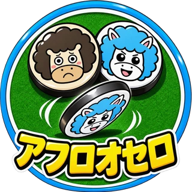

AFRO
Horse
SOUND
EXIT
REVERSI

ブルマをはさんで、ひっくり返せ
自己ベスト
—
スタート
説明
あそびかた
ふつうのオセロ。
あなたがアフワ（茶）、ブルマ（青）が相手
。先手はアフワ
光っているマス
に置ける。置くと、はさんだブルマがぜんぶアフワに返る
置ける場所が無いときは
自動でパス
盤がうまったら終わり。
残ったアフワの枚数がそのまま記録
（最高64枚）
勝つだけでなく
どれだけ多く残すか
。四すみを取ると返されにくい
ブルマは終盤になると本気を出す
。序盤の差だけでは逃げきれん
とじる
YOU
2
CPU
2
LEFT
60
光ったマスをタップして置く